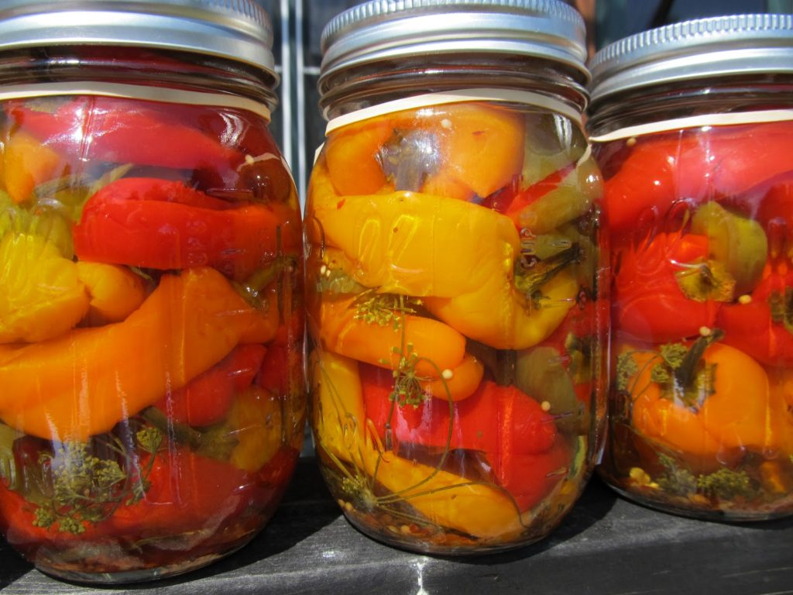

Being Self-sufficient

Is it possible to support you and your family?
Let's be honest, prices are rising. Simple ingredients like eggs and milk are becoming more of a luxury as time goes on. This is one of the main reason why I, like many others, are considering producing our own resources. The main question, is this possible? Growing and perserving food is a main component of Homesteading, and the process is not so hard to do.
If you're willing and able to get your hands in the dirt that is. Homesteading can be a messy process with many mistakes along the way but it is not something to shy away from. Plus, like most would agree, most things are better homemade. Click to link below to follow "The Famer's Table" as she guides you through the canning process to perserve food.